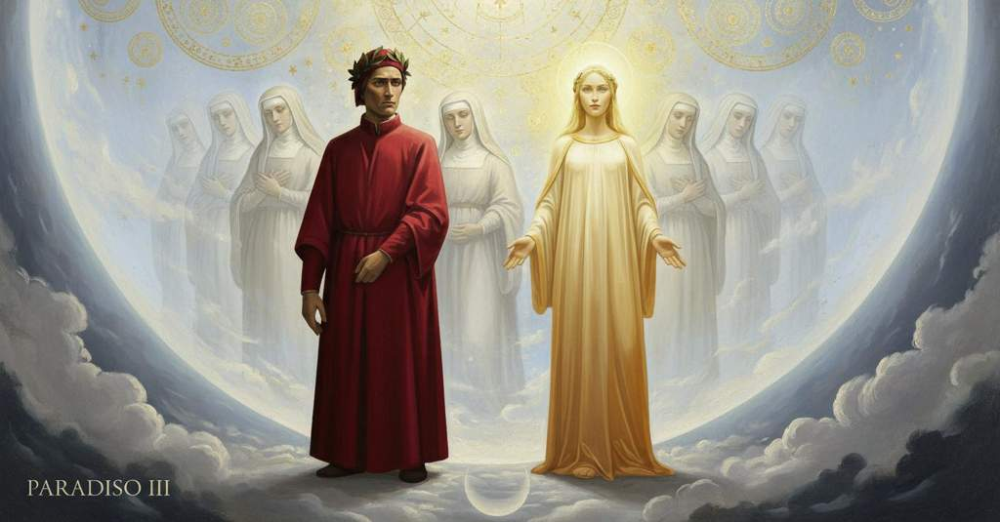

Paradiso — Canto 3

Nel cielo della Luna, Dante incontra le anime di coloro che non mantennero i voti, parla con Piccarda Donati che gli spiega come la loro volontà si conformi a quella di Dio, e apprende la sua storia e quella dell'imperatrice Costanza. In the Heaven of the Moon, Dante meets the souls of those who did not keep their vows, speaks with Piccarda Donati who explains how their will conforms to God's, and learns her story and that of Empress Constance. 月の天で、ダンテは誓いを守らなかった魂たちに出会い、ピッカルダ・ドナーティと語り、彼女から自らの意志が神の意志にいかに合致するかを教えられ、彼女と皇妃コスタンツァの物語を知る。
1
Quel sol che pria d’amor mi scaldò ’l petto,
That sun which first with love had warmed my breast,
かつて愛をもって私の胸を温めてくれたあの太陽は、
2
di bella verità m’avea scoverto,
had of beautiful truth to me uncovered,
美しい真実を私に明かしてくれた、
3
provando e riprovando, il dolce aspetto;
by proving and refuting, the sweet aspect;
論証と反証を重ね、その甘美な姿で。
4
e io, per confessar corretto e certo
and I, to confess myself corrected and certain,
そして私は、自分が正され、確信したことを告白するため、
5
me stesso, tanto quanto si convenne
as much as was befitting,
しかるべき高さまで
6
leva’ il capo a proferer più erto;
raised my head to speak more erectly;
言葉を発しようと、よりまっすぐに頭を上げた。
7
ma visïone apparve che ritenne
but a vision appeared that held
しかし、ある幻影が現れ、私を捉えた
8
a sé me tanto stretto, per vedersi,
me to itself so tightly, to be seen,
それ自身を見せようと、あまりに強く、
9
che di mia confession non mi sovvenne.
that of my confession I had no memory.
私の告白を忘れさせてしまった。
10
Quali per vetri trasparenti e tersi,
As through transparent and polished glass,
透明で清らかなガラスを通して、
11
o ver per acque nitide e tranquille,
or through clear and tranquil waters,
あるいは澄みきって静かな水を通して、
12
non sì profonde che i fondi sien persi,
not so deep that the bottom is lost,
底が見失われるほど深くはない水を通して、
13
tornan d’i nostri visi le postille
the outlines of our faces return
我々の顔の輪郭が返ってくるように、
14
debili sì, che perla in bianca fronte
so faint, that a pearl upon a white forehead
あまりに弱々しく、白い額の真珠の方が
15
non vien men forte a le nostre pupille;
comes to our pupils with no lesser force;
我々の瞳にはっきりと映るほどに。
16
tali vid’ io più facce a parlar pronte;
such faces I saw, ready to speak;
そのような、話したがっている多くの顔を私は見た。
17
per ch’io dentro a l’error contrario corsi
for which I ran into the contrary error
それゆえに私は、あの人と泉の間に愛を燃え上がらせた
18
a quel ch’accese amor tra l’omo e ’l fonte.
to that which kindled love between the man and the spring.
あの過ちとは逆の過ちに陥った。
19
Sùbito sì com’ io di lor m’accorsi,
As soon as I was aware of them,
すぐに私はそれらに気づくと、
20
quelle stimando specchiati sembianti,
judging them to be reflected images,
それらを鏡に映った姿だと思い、
21
per veder di cui fosser, li occhi torsi;
to see whose they were, I turned my eyes back;
誰の姿か確かめようと、目をそらした。
22
e nulla vidi, e ritorsili avanti
and I saw nothing, and turned them forward again
そして何も見えず、再び目を前に戻した、
23
dritti nel lume de la dolce guida,
straight into the light of the sweet guide,
まっすぐに、あの甘美な導き手の光の中へ。
24
che, sorridendo, ardea ne li occhi santi.
who, smiling, was burning in her holy eyes.
彼女は微笑みながら、その聖なる目に燃えていた。
25
«Non ti maravigliar perch’ io sorrida»,
“Do not be amazed that I smile,”
「私が微笑むのを不思議に思わないで」
26
mi disse, «appresso il tuo püeril coto,
she said to me, “at your childish thought,
と彼女は言った、「あなたの幼い考えのせいです、
27
poi sopra ’l vero ancor lo piè non fida,
since on the truth your foot does not yet trust,
まだ真実の上に足をしっかりと置いていないのですから、
28
ma te rivolve, come suole, a vòto:
but turns you, as it is wont, to emptiness:
むしろ、いつものように、あなたを空虚へと向かわせるのです。
29
vere sustanze son ciò che tu vedi,
what you see are true substances,
あなたが見ているものは、真実の存在です、
30
qui rilegate per manco di voto.
relegated here for failure in a vow.
誓いを破ったがために、ここに留められているのです。
31
Però parla con esse e odi e credi;
Therefore speak with them, and hear, and believe;
ですから、彼女たちと話し、聞き、そして信じなさい。
32
ché la verace luce che le appaga
for the true light that contents them
なぜなら、彼女たちを満たす真実の光は、
33
da sé non lascia lor torcer li piedi».
does not let them turn their feet from it.”
彼女たちの足を、自らから逸れさせはしないのですから」。
34
E io a l’ombra che parea più vaga
And I to the shade that seemed most eager
そして私は、最も話したがっているように見えた影の方へ
35
di ragionar, drizza’mi, e cominciai,
to speak, turned myself, and began,
体を向け、そして語り始めた、
36
quasi com’ uom cui troppa voglia smaga:
almost like a man whom too much desire bewilders:
あまりに強い願望に圧倒された者のように。
37
«O ben creato spirito, che a’ rai
"O well-created spirit, who in the rays
「おお、善く創られし魂よ、あなたは光の中で
38
di vita etterna la dolcezza senti
of eternal life feel the sweetness
永遠の生命の甘美さを感じておられる、
39
che, non gustata, non s’intende mai,
that, not tasted, is never understood,
それは味わってみなければ、決して理解できないものです、
40
grazïoso mi fia se mi contenti
it will be a grace to me if you content me
私を満足させてくださるなら、私には恵みとなるでしょう
41
del nome tuo e de la vostra sorte».
with your name and with your fate."
あなたの名と、あなた方の境遇について」。
42
Ond’ ella, pronta e con occhi ridenti:
At which she, ready and with smiling eyes:
すると彼女は、すぐさま、そして微笑む目で、
43
«La nostra carità non serra porte
"Our charity does not shut its doors
「私たちの慈愛は扉を閉ざしはしません
44
a giusta voglia, se non come quella
to a just wish, any more than that Charity
正しい願いに対して、ちょうどかの慈愛のように
45
che vuol simile a sé tutta sua corte.
which wills all its court to be like itself.
自らの宮廷のすべてを自分に似せようと望む。
46
I’ fui nel mondo vergine sorella;
In the world I was a virgin sister;
私は俗世では処女の修道女でした。
47
e se la mente tua ben sé riguarda,
and if your mind regards itself well,
そして、もしあなたの記憶がよく探るなら、
48
non mi ti celerà l’esser più bella,
my being more beautiful will not hide me from you,
私がより美しくなったことが、あなたから私を隠しはしないでしょう、
49
ma riconoscerai ch’i’ son Piccarda,
but you will recognize that I am Piccarda,
むしろ、私がピッカルダであることをお認めになるでしょう、
50
che, posta qui con questi altri beati,
who, placed here with these other blessed ones,
ここに他の福者たちと共に置かれ、
51
beata sono in la spera più tarda.
am blessed in the slowest sphere.
最も遅い天球にあって、私は祝福されています。
52
Li nostri affetti, che solo infiammati
Our affections, which are aflame only
私たちの愛情は、ただ燃え立っています
53
son nel piacer de lo Spirito Santo,
in the pleasure of the Holy Spirit,
聖霊の喜悦の中にのみ、
54
letizian del suo ordine formati.
rejoice in being formed by His order.
その秩序によって形作られ、喜びます。
55
E questa sorte che par giù cotanto,
And this fate which appears so far down,
そして、これほど低いように見えるこの境遇は、
56
però n’è data, perché fuor negletti
is therefore given to us, because our vows
それゆえに私たちに与えられたのです、なぜなら私たちの誓願が
57
li nostri voti, e vòti in alcun canto».
were neglected, and void in some part."
疎かにされ、ある点において空しいものとなったからです」。
58
Ond’ io a lei: «Ne’ mirabili aspetti
At which I to her: "In your wondrous aspects
そこで私は彼女に言った。「あなた方の驚くべき容貌には
59
vostri risplende non so che divino
there shines I know not what of the divine
何か神的なものが輝いており、
60
che vi trasmuta da’ primi concetti:
that transmutes you from my first conceptions:
それがあなた方を最初の印象から変容させています。
61
però non fui a rimembrar festino;
therefore I was not quick to remember;
それゆえ、私は思い出すのが早くありませんでした。
62
ma or m’aiuta ciò che tu mi dici,
but now what you tell me helps me,
しかし今、あなたが私に語ることが助けとなり、
63
sì che raffigurar m’è più latino.
so that to picture you is easier for me.
あなたの姿を認めることが、より容易になりました。
64
Ma dimmi: voi che siete qui felici,
But tell me: you who are happy here,
しかし、お教えください。ここにいて幸福なあなた方は、
65
disiderate voi più alto loco
do you desire a more exalted place
より高い場所を望まれるのですか、
66
per più vedere e per più farvi amici?».
to see more and to make yourselves more friends?"
より多くを見るため、そしてより親しい者となるために？」。
67
Con quelle altr’ ombre pria sorrise un poco;
With those other shades she first smiled a little;
彼女は、まず他の影たちと共に少し微笑み、
68
da indi mi rispuose tanto lieta,
then she answered me so joyfully,
それから私に答えた、あまりに喜ばしげに、
69
ch’arder parea d’amor nel primo foco:
that she seemed to burn in love's first fire:
愛の最初の炎に燃えているかのようであった。
70
«Frate, la nostra volontà quïeta
"Brother, our will is quieted
「兄弟よ、私たちの意志を静めるのは
71
virtù di carità, che fa volerne
by the power of charity, which makes us want
慈愛の徳です、それは私たちに望ませます
72
sol quel ch’avemo, e d’altro non ci asseta.
only what we have, and thirst for nothing else.
ただ私たちが持つものだけを、そして他のものに渇きはしません。
73
Se disïassimo esser più superne,
If we desired to be more exalted,
もし私たちが、より高いところにいることを望んだなら、
74
foran discordi li nostri disiri
our desires would be discordant
私たちの願望は不和となるでしょう
75
dal voler di colui che qui ne cerne;
with the will of Him who assigns us here;
ここで私たちを選び分ける方の意志と。
76
che vedrai non capere in questi giri,
which you will see has no place in these spheres,
あなたはそれがこれらの天輪ではあり得ないことを見るでしょう、
77
s’essere in carità è qui necesse,
if to be in charity is necessary here,
もし慈愛のうちにあることがここで必要であり、
78
e se la sua natura ben rimiri.
and if you consider its nature well.
そして、もしその本性をよく見るならば。
79
Anzi è formale ad esto beato esse
Rather, it is essential to this blessed existence
むしろ、この祝福された存在にとって本質的なのです
80
tenersi dentro a la divina voglia,
to hold ourselves within the divine will,
神の意志のうちに留まることが、
81
per ch’una fansi nostre voglie stesse;
so that our own wills become one;
それによって私たちの意志そのものが一つとなるのですから。
82
sì che, come noi sem di soglia in soglia
so that, as we are from threshold to threshold
ですから、私たちが階層から階層へと
83
per questo regno, a tutto il regno piace
throughout this kingdom, it pleases the whole kingdom
この王国にいるように、王国全体が喜ぶのです、
84
com’ a lo re che ’n suo voler ne ’nvoglia.
as it does the King who wills us into His will.
自らの意志のうちに私たちを望む王のように。
85
E ’n la sua volontade è nostra pace:
And in His will is our peace:
そして、その御心のうちに私たちの平安はあるのです。
86
ell’ è quel mare al qual tutto si move
it is that sea to which all things move
それは、かの海であり、そこへすべてのものが動いていく、
87
ciò ch’ella crïa o che natura face».
which it creates or which nature makes."
それが創るものも、自然が生み出すものも」。
88
Chiaro mi fu allor come ogne dove
It was clear to me then how every where
その時、私には明らかになった、いかにして天国の
89
in cielo è paradiso, etsi la grazia
in heaven is paradise, even if the grace
あらゆる場所が楽園であるかが、たとえ至高の善の
90
del sommo ben d’un modo non vi piove.
of the highest good does not rain there in one measure.
恩寵が一様にはそこに降り注がないとしても。
91
Ma sì com’ elli avvien, s’un cibo sazia
But just as it happens, if one food satisfies
だが、一つの食べ物が満腹させても
92
e d’un altro rimane ancor la gola,
and for another the craving still remains,
別のものをなおも喉が欲するように、
93
che quel si chere e di quel si ringrazia,
that the latter is asked for and for the former thanks is given,
その一つを求め、もう一つに感謝するように、
94
così fec’ io con atto e con parola,
so did I with gesture and with word,
私も身振りと言葉でそのようにした、
95
per apprender da lei qual fu la tela
to learn from her what was the web
彼女から、どのような織物であったかを学ぶために
96
onde non trasse infino a co la spuola.
from which she did not draw the shuttle to the end.
そこから彼女が最後まで杼を引かなかったかを。
97
«Perfetta vita e alto merto inciela
"A perfect life and high merit en-heavens
「完璧な生と高き功徳が天に上げているのです
98
donna più sù», mi disse, «a la cui norma
a lady higher up," she said to me, "by whose rule
より高みにいる貴婦人を」と彼女は言った、「その規範に倣い
99
nel vostro mondo giù si veste e vela,
in your world below one is clothed and veiled,
下界のあなた方の世界では、衣をまといヴェールを被るのです、
100
perché fino al morir si vegghi e dorma
so that until death one may wake and sleep
死ぬまで目覚め、そして眠るために
101
con quello sposo ch’ogne voto accetta
with that spouse who accepts every vow
あらゆる誓願を受け入れるあの花婿と共に、
102
che caritate a suo piacer conforma.
that charity conforms to his pleasure.
それは慈愛がその御心にかなうものとする誓願です。
103
Dal mondo, per seguirla, giovinetta
From the world, to follow her, as a young girl
世俗から、彼女に従うため、乙女の身で
104
fuggi’mi, e nel suo abito mi chiusi
I fled, and in her habit I enclosed myself
私は逃れ、その修道服に身を閉じ
105
e promisi la via de la sua setta.
and promised the way of her order.
そしてその宗派の道を誓いました。
106
Uomini poi, a mal più ch’a bene usi,
Then men, to evil more than to good accustomed,
その後、善よりも悪に慣れた男たちが、
107
fuor mi rapiron de la dolce chiostra:
tore me away from the sweet cloister:
私を甘美な修道院から外へと攫いました。
108
Iddio si sa qual poi mia vita fusi.
God knows what my life then became.
その後の私の人生がどうであったかは、神のみぞ知る。
109
E quest’ altro splendor che ti si mostra
And this other splendor that reveals itself to you
そして、あなたに見えるこのもう一つの輝きは
110
da la mia destra parte e che s’accende
on my right side and that is kindled
私の右側にあって、燃え立つように輝くものは
111
di tutto il lume de la spera nostra,
with all the light of our sphere,
私たちの天球のすべての光で、
112
ciò ch’io dico di me, di sé intende;
understands of herself what I say of myself;
私が自分について言うことを、自身のこととして理解しています。
113
sorella fu, e così le fu tolta
she was a sister, and so from her head was taken
彼女は姉妹（修道女）であり、同じように彼女から奪われたのです
114
di capo l’ombra de le sacre bende.
the shadow of the sacred bands.
頭から聖なる頭巾の影が。
115
Ma poi che pur al mondo fu rivolta
But after she was turned back to the world
しかし、世俗へと戻されても
116
contra suo grado e contra buona usanza,
against her will and against good custom,
その意に反し、良き慣習に反して、
117
non fu dal vel del cor già mai disciolta.
she was never unbound from the veil of her heart.
心のヴェールから解き放たれることは決してありませんでした。
118
Quest’ è la luce de la gran Costanza
This is the light of the great Constance
これが、偉大なるコスタンツァの光、
119
che del secondo vento di Soave
who from the second wind of Swabia
シュヴァーベンの第二の風から
120
generò ’l terzo e l’ultima possanza».
generated the third and the final power."
第三にして最後の権力を生み出した方です」。
121
Così parlommi, e poi cominciò ‘Ave,
Thus she spoke to me, and then began ‘Ave,
このように私に語り、そして「アヴェ、
122
Maria’ cantando, e cantando vanio
Maria’ singing, and singing she vanished
マリア」と歌い始め、歌いながら消えていった
123
come per acqua cupa cosa grave.
like a heavy thing through deep water.
深い水の中の重い物のように。
124
La vista mia, che tanto lei seguio
My sight, which followed her as far
私の視線は、彼女を追える限り
125
quanto possibil fu, poi che la perse,
as was possible, after it lost her,
可能な限り追い続けたが、見失うと、
126
volsesi al segno di maggior disio,
turned to the object of my greater desire,
より大いなる望みの的へと向き、
127
e a Beatrice tutta si converse;
and to Beatrice wholly it was converted;
そしてベアトリーチェへと完全に転じた。
128
ma quella folgorò nel mïo sguardo
but she so flashed upon my gaze
しかし彼女は私の眼差しの中で稲妻のように輝き、
129
sì che da prima il viso non sofferse;
that at first my vision did not endure it;
最初は私の視力はそれに耐えられなかった。
130
e ciò mi fece a dimandar più tardo.
and this made me slower to ask.
そしてそのことが、私に問いかけるのをためらわせた。